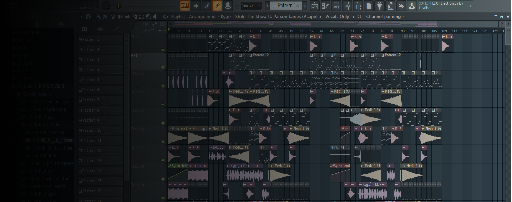

Tutoriel complet
sur FLStudio
vous pouvez obtenir FLstudio en cliquant sur le boutton suivant.
Après sa sortie, de nombreux DJ se mettent à utiliser ce logiciel, dont Avicci, Tiesto...
Cependant, afin de créer une musique, il faut avoir des connaissances, et FLStudio n'est pas facile à prendre en main lorsqu'on débute.
Ainsi, j'ai réalisé différents tutos pour vous aider à composer et devenir le beatmaker dont vous avez toujours rêvé être.
Pour obtenir FLStudio, cliquez sur le bouton en haut de la page, vous allez être redirigé vers le lien officiel du logiciel.
Cependant, le logiciel est payant, ce qui est compréhensible étant donné l'immensité des fonctionnalité mises à disposition dans le logiciel, mais vous pouvez télécharger des extension appelées VST qui premettent d'obtenir de nouveaux samples, sons, effets...